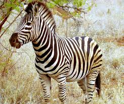
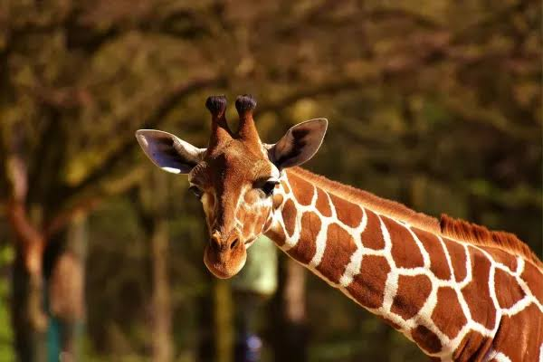
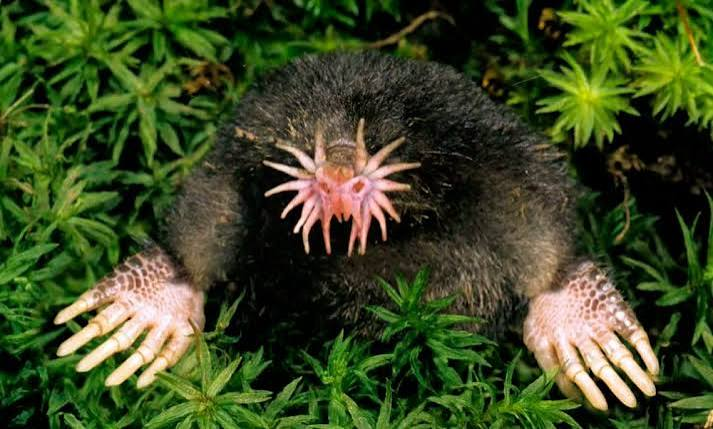

Las cebras son animales que no pueden ver el color naranja, por lo que para ellas, los leones se ven de color verde.
Ademas son blancas con rayas negras si su piel es blanca.


El topo de nariz estrellada es un animal que vive bajo tierra y es ciego, pero tiene un sentido del olfato muy desarrollado.
Ademas es un animal que puede vivir hasta 6 años.
